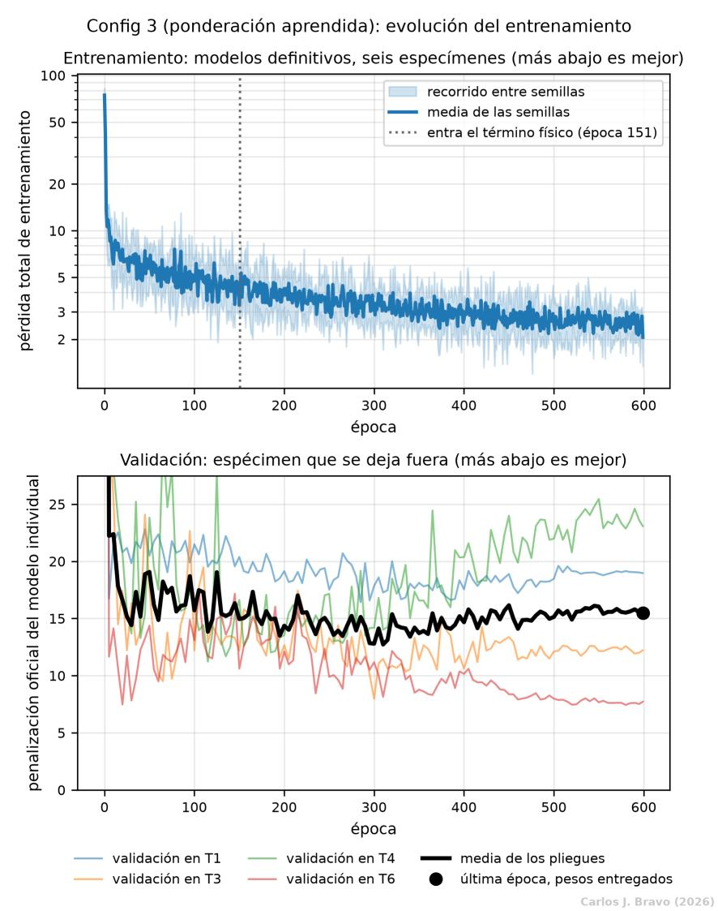
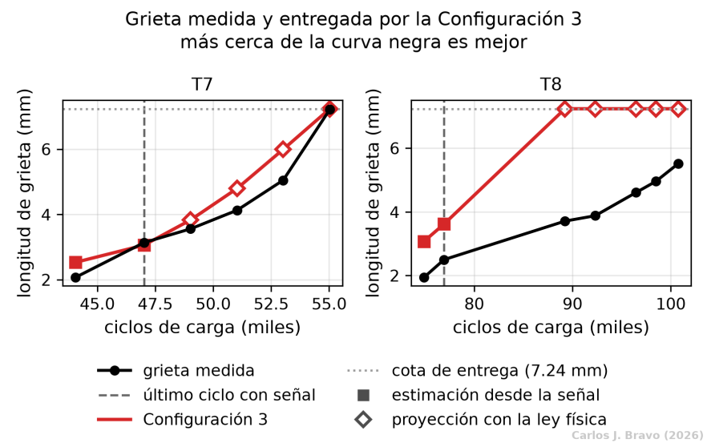
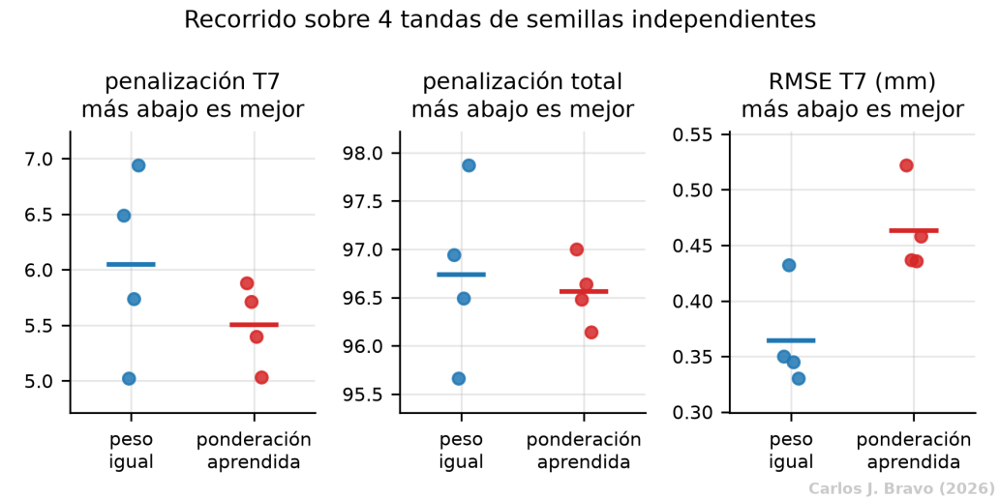
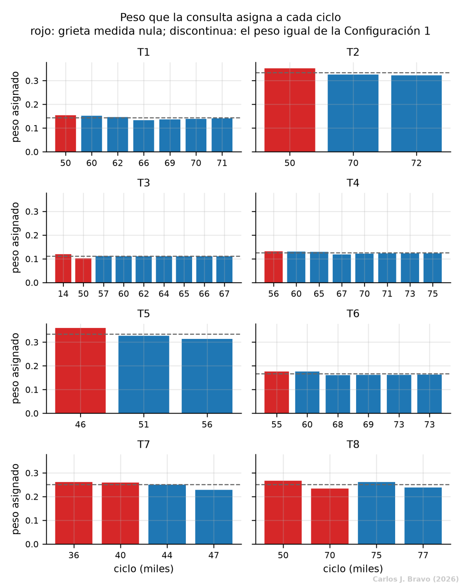

- 1. El problema
- 2. La señal
- 3. La ley física
- 4. El modelo
- 5. Conclusiones
- Bibliografía
Configuración 3: que la red decida cuánto pesa cada ciclo
Para calcular el coeficiente de una probeta, la Configuración 1 promedia todas sus ondas por igual, incluida la del registro sano, que no contiene daño. Esta configuración sustituye ese promedio por un mecanismo de autoatención, la misma idea que está detrás de los Transformers, para que la red aprenda qué ciclos merecen más peso.
Un promedio que aprende
La Configuración 3 añade a la base el componente (d). Cambia una sola cosa: la forma de resumir las huellas de todas las ondas de la probeta antes de que la cabeza del coeficiente calcule C. La cabeza de estimación, la que entrega la grieta de cada onda, no se toca. Así, cualquier diferencia se puede atribuir al componente y a la magnitud que pretende mejorar, el coeficiente.
La expectativa de partida era doble. Por un lado, que la red aprendiera a descontar el ciclo de referencia, que por construcción no tiene daño, y a dar más peso a los ciclos que informan de la velocidad de crecimiento. Por otro, que al ponderar la secuencia completa pudiera detectar que una probeta se comporta de forma distinta a las de entrenamiento, que es justo lo que pasa con T8.
Cómo funciona la autoatención
La atención es una forma de mezclar elementos de una secuencia con pesos que se calculan en el momento. Cada elemento se proyecta en tres vectores: una consulta (Q), una clave (K) y un valor (V). El parecido entre la consulta y cada clave decide cuánto pesa el valor correspondiente en el resultado. La operación estándar, introducida por Vaswani et al. (2017), es:
La división por la raíz de dk, la dimensión de las claves, evita que los productos crezcan demasiado y la función softmax se sature. Aplicado a este problema, la cabeza del coeficiente ya no recibe el promedio de las huellas, sino la salida de la atención sobre ellas:
donde z1 a zk son las huellas de los k ciclos de la probeta y g es la capa lineal de la cabeza del coeficiente.
Un diseño pensado para secuencias diminutas
Los Transformers que se usan en lenguaje procesan miles de elementos. Aquí cada probeta tiene entre 3 y 9 ciclos con señal en entrenamiento, y solo 4 en T7 y T8. Con tan pocos elementos, la atención no modela dependencias lejanas: simplemente pondera cuánto aporta cada ciclo. Eso condicionó cada decisión.
Mismo protocolo, misma curva
La Configuración 3 se entrena exactamente igual que la base: mismas 600 épocas, misma pérdida, mismos pesos de cada término, mismas semillas y misma validación dejando fuera una probeta de entrenamiento cada vez. La pérdida sigue un recorrido casi idéntico y la validación termina en 15.49, frente a 15.26 de la configuración base. La subida final viene sobre todo de T4, que empeora de forma sostenida desde la época 350, mientras T6 mejora y T3 se mantiene.

Mejor en T7, peor en T8... ¿o no?
| Variante | T7 | T8 | Total | RMSE T7 (mm) | RMSE T8 (mm) |
|---|---|---|---|---|---|
| Configuración 1, promedio con peso igual | 6.49 | 90.45 | 96.94 | 0.350 | 2.418 |
| Configuración 3, ponderación aprendida | 5.88 | 91.12 | 97.00 | 0.522 | 2.431 |

A primera vista, la atención mejora T7 (5.88 frente a 6.49) y empeora un poco T8 (91.12 frente a 90.45). Pero con un conjunto tan pequeño, cambiar solo la semilla con la que se inicializa la red puede mover el resultado tanto como cambiar la arquitectura. Para no confundir una cosa con otra se aplicó una regla sencilla: cada arquitectura se entrenó en cuatro tandas de semillas independientes, y una diferencia solo se atribuye al componente si los recorridos de las dos no se solapan.
| Magnitud | Promedio con peso igual | Ponderación aprendida | ¿Difieren? |
|---|---|---|---|
| Penalización de T7 | 5.02 a 6.94 | 5.03 a 5.88 | No, se solapan |
| Penalización de T8 | 90.45 a 90.93 | 90.77 a 91.24 | No, se solapan |
| Total | 95.66 a 97.87 | 96.14 a 97.00 | No, se solapan |
| RMSE de T7 (mm) | 0.330 a 0.432 | 0.436 a 0.522 | Sí, no se tocan |

En la penalización, que es lo que puntúa el certamen, las nubes se solapan en todo, así que la mejora de T7 no se puede atribuir al componente. Solo dos cosas se separan con claridad, y van en sentidos opuestos. A favor: con la atención, el resultado de T7 varía menos de una semilla a otra. En contra: el error medio de T7 empeora siempre, en todas las tandas. La atención no reduce el error; cambia su forma, inclinándolo hacia el lado de pasarse, que la regla del certamen castiga menos.
Qué aprendió la atención
Una ventaja de la atención es que sus pesos se pueden leer directamente. Si la expectativa fuera cierta, los ciclos sin grieta deberían recibir menos peso que los ciclos con grieta. No es lo que ocurre. La razón entre el peso medio de los ciclos sin grieta y el de los ciclos con grieta va de 0.995 a 1.123, con mediana 1.077, y es mayor que uno en siete de las ocho probetas: los ciclos sanos pesan, si acaso, un poco más.

Lo importante, sin embargo, no es la dirección del sesgo sino su tamaño. Los pesos quedan muy cerca del reparto uniforme que el mecanismo venía a sustituir. Si la atención aprende algo casi idéntico al promedio, la cabeza del coeficiente recibe casi lo mismo y devuelve casi lo mismo, y eso explica por sí solo el empate.
Dos probetas indistinguibles donde la red mira
Hay una razón más de fondo, y no está en el modelo sino en los datos. Si se ajusta la ley de Paris directamente a las grietas medidas, sin ninguna red de por medio, T7 y T8 implican coeficientes que difieren solo 0.0070 décadas en la ventana con señal, y 0.4253 décadas en la ventana que hay que predecir. Las dos probetas son prácticamente iguales justo donde el estimador puede mirar, y se separan donde ya no hay nada que medir.
Por eso ninguna ponderación de esas ondas puede producir dos coeficientes distintos. Y cualquier ajuste que bajase el de T8 bajaría también el de T7 y lo empeoraría. No es un problema de capacidad, porque la cabeza puede emitir sin dificultad el valor que T8 necesita; es un problema de información. Lo único que distingue a T8 es su espectro de carga, que se conoce de antemano, pero aprender qué implica exigiría al menos una probeta de carga variable en entrenamiento, y no hay ninguna.